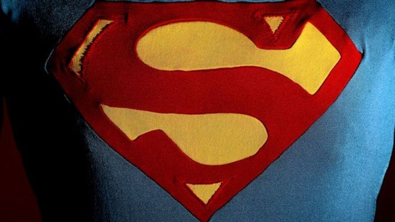
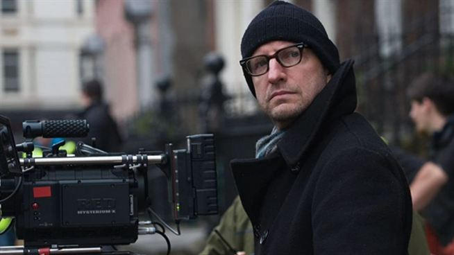
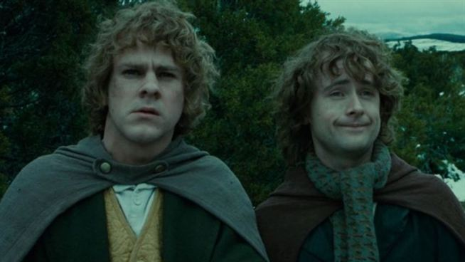
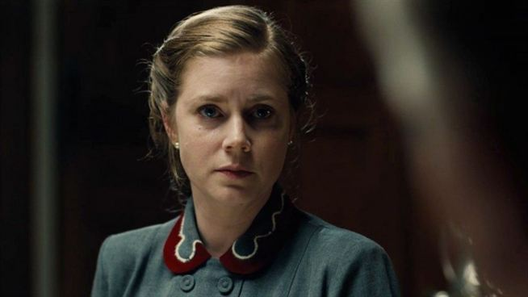
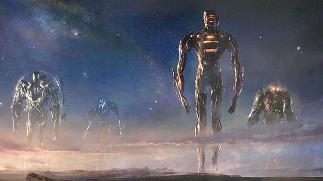
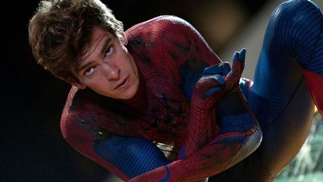
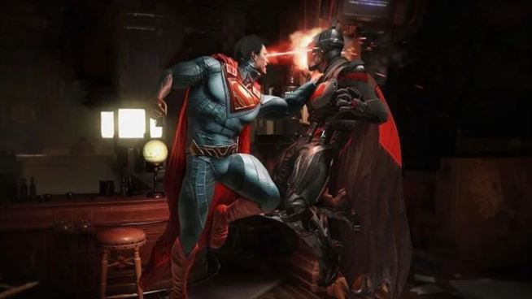
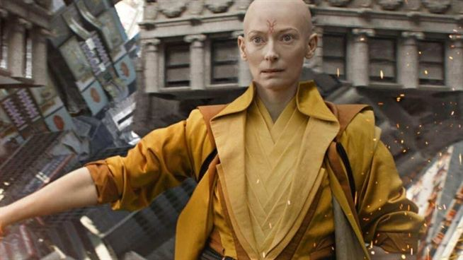
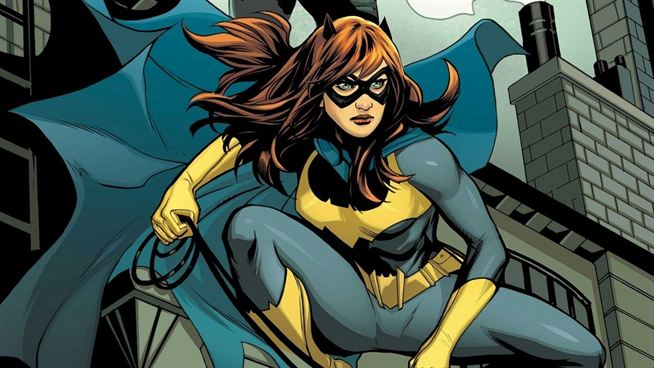
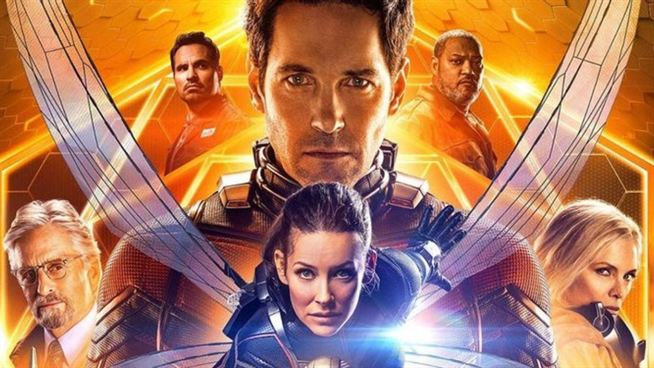

|

|
Bros, Superman Filmi İçin Siyahi Yönetmen ve Oyuncu Arıyor
The Flash filmi ile DC, çoklu evrenin tanıtımını yapacak. Böylece Joker ve The Batman'in nasıl DC içerisinde olup diğer kahramanlarla bağlantılı olmadıkları açıklanacak.
Çünkü The Flash'te Batman olarak hem Ben Affleck, hem de Michael Keaton yer alacak. Bu aralanan kapının arkası yeni Superman'e çıkabilir.
Başka bir kaynağa göre yeni Superman filmi, Kal-El'in çizgi romanlarda yer alan birebir orijin hikayesini anlatacak.
|
|

|
Soderbergh, Kötü Oscar Yorumlarına Karşı Savunma Yaptı
93. Akademi Ödül Töreni, 25 Nisan tarihinde gerçekleştirilmiş ve dünya çapında sinema gündemine oturmuştu. Oscar Töreni, belki de gelmiş geçmiş en sıkıcı törenlerden biri olarak yorumlandı.
Ödül kazananların konuşmalarının çok uzun olması ve törenin sonu eleştiri konusu oldu.
Törenin yapımcısı Steven Soderbergh ise törenin sonunun öyle olmasının nedenini Chadwick Boseman'ın ödül kazanamamasına bağladı.
|
|

|
Lord of The Rings'in Peregrin Took'u ve Merry Brandybuck'ı Podcast'e Başladı
Yüzüklerin Efendisi serisinin yıldız oyuncuları Dominic Monaghan ve Billy Boyd, The Friendship Onion isimli bir podcast programı yapmaya başladı. Açıklamalara göre program boyunca ünlü konuklarla buluşacak ve dinleyicilere sürpriz sorular soracaklar.
İkiliyi son olarak Josh Gad'ın karantina programında birlikte görme şansı yakalamıştık.
|
|

|
Amy Adams, "Finding The Mother Tree"nin Başrolü Olacak
Karşımıza Woman In The Window filmiyle çıkmaya hazırlanan Amy Adams, Finding The Mother Tree'nin hem yapımcısı hem de başrol oyuncusu olacak.
Ayrıca Jake Gyllenhaal, yapımcı olarak Adams'a eşlik edecek. Söylenenlere göre bu film yalnızca bir biyografi yapımı olmayacak.
Ayrıca dünyayı korumamız gerektiğiyle ilgili harekete geçme çağrısında da bulunacak.
|
|

|
Oscar Ödüllü Chloe Zhao İmzalı "Eternals"dan Teaser!
Marvel Stüdyoları, evrenin eski ve yeni filmlerinden hazırladığı bir videoyu resmi olarak paylaştı.
Videonun en sonunda ise Eternals sürprizi yer alıyordu. Angelina Jolie'nin Thena'sını böylelikle yakından görme imkanı yakaladık.
Marvel, videoyu "Dünya değişip dönüşebilir. Ama değişmeyecek tek bir şey var. Hepimiz büyük bir ailenin parçasıyız."
|
|

|
Andrew Garfield, Spider-Man: No Way Home Dedikoduları Hakkında Konuştu
Tom Holland başrollü Spider-Man: No Way Home hakkındaki dedikodular hala gündemde kendine yer buluyor.
En büyük dedikoduya göre, Sony'nin diğer Spider-Manleri Andrew Garfield ve Tobey Maguire, No Way Home'un çoklu evrenine girişte görülecek.
Ama Andrew Garfield'ın yaptığı açıklamalar, bu konu hakkında bir bilgisi olmadığını gösteriyor.
|
|

|
DC, Animasyon Filmi "Injustice: Gods Among Us"ın Duyurusunu Yaptı
Oyunu bulunan DC bünyesindeki Injustice: Gods Among Us, filme uyarlanıyor.
Animasyon filmi olarak karşımıza çıkacak olan Injustice: Gods Among Us, DC'nin karanlık alternatif evrenine götürüyor.
Filmin duyurusu yapılır yapılmaz Amerika'nın Twitter'ında Trend Topic olduğu biliniyor.
|
|

|
Kevin Feige, "Doctor Strange" Ekibini Beyazlaştırdıkları İçin Pişman!
Scott Derrickson'ın yönetmen koltuğunda bulunduğu Doctor Strange filmiyle ilgili Kevin Feige'den yeni bir açıklama geldi.
Feige, çizgi romanlarda Asyalı bir karakter olan The Ancient One'ın beyaz bir oyuncu ile değiştirilmesinin hata olduğunu belirtti.
Böylece filmleri beyazlaştırma (whitewashing) konusunda yapılan eleştirilere cevap vermiş oldu.
|
|

|
Adil El Arbi ve Bilal Fallah DC İçin "Batgirl"ü Yönetecek
Warner Bros bünyesinde hayata geçirilecek olan Batgirl filminin yönetmenleri resmi olarak açıklandı.
Bad Boys For Life ile başarı yakalayan Adil El Arbi ve Bilall Fallah, Batgirl'ün yönetmenliğini üstlenecek.
Filmin HBO Max üzerinden gösterime girmesi planlanıyor.
Bumblebee'nin yazarı Christina Hodson ise filmi kaleme alacak.
|
|

|
Ant-Man and The Wasp: Quantumania'da The Mandalorian Teknolojisi Kullanılacak
Marvel Sinematik Evreni'nin yeni filmi Ant-Man and The Wasp: Quantumania'dan bir kamera arkası görüntüsü paylaşıldı.
Filmin yönetmeni Peyton Reed'in paylaşımından anlaşıldığı kadarıyla Ant-Man 3, The Mandalorian'da kullanılan ileri düzey teknoloji ile çekiliyor.
|